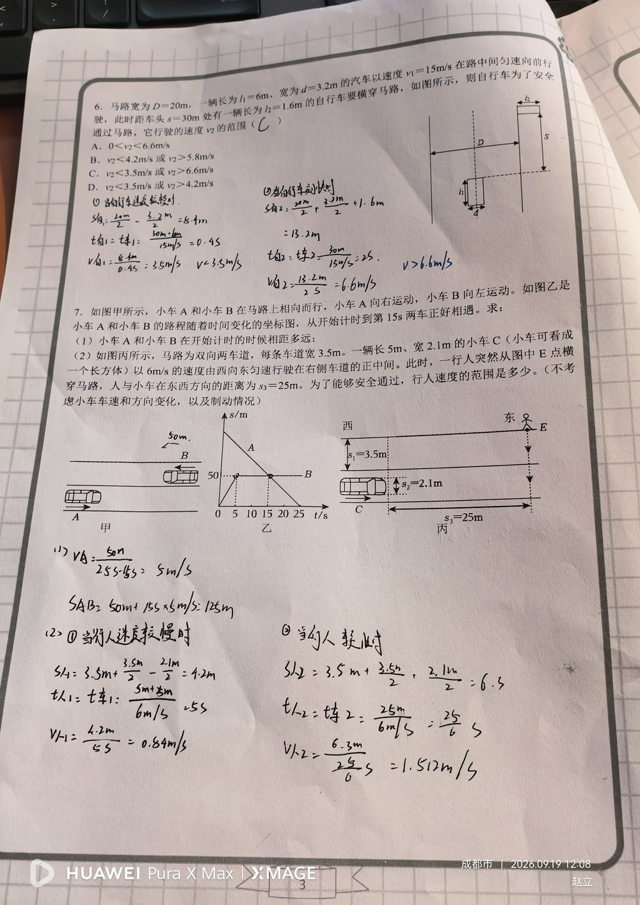

① 马路宽 D = 20 m； ② 汽车：长 6 m、宽 3.2 m，行驶在路正中间，速度 v₁ = 15 m/s； ③ 自行车：长 1.6 m，车头距它 s = 30 m，要横穿马路。
求自行车能安全通过马路的行驶速度 v₂ 的范围。
把"安全"拆成两种情形，分别求临界速度： ① 慢速情况（让汽车先过）：自行车先走到车身近侧停下等待。 路边到车身近侧的距离 = (20 − 3.2) ÷ 2 = 8.4 m； 等待时间 = 车头到达的时间 + 车身完全通过的时间 = 30 ÷ 15 + 6 ÷ 15 = 2 s + 0.4 s = 2.4 s； → v₂ ≤ 8.4 ÷ 2.4 = 3.5 m/s。 ② 快速情况（抢在汽车前通过）：自行车要在车头到达前穿过车身所占的横向区域并让出自身长度： 需穿过的距离 = 20 ÷ 2 + 3.2 ÷ 2 + 1.6 = 10 + 1.6 + 1.6 = 13.2 m； 可用时间 = 车头到达的时间 = 30 ÷ 15 = 2 s； → v₂ ≥ 13.2 ÷ 2 = 6.6 m/s。 结论：v₂ < 3.5 m/s 或 v₂ > 6.6 m/s，选 C。
① 忘记"汽车有长度"：车尾通过还要 0.4 s（6 ÷ 15），只算 2 s 就会算成 4.2 m/s； ② 把"通过马路"误当成必须走完 20 m（实际只需走出车身区域）； ③ 两个距离含义混淆：慢速用 8.4 m（到车身近侧），快速用 13.2 m（穿过车身区）； ④ 只算出一个临界速度，漏掉另一侧，导致选错选项。
匀速直线运动 v = s/t； 临界状态分析（刚好通过 / 刚好相撞）； 分类讨论求速度范围； 几何建模：把"车身宽度、车身长度、自身长度"转化为实际需通过的距离。